Feder Research Group in Evolutionary Dynamics
Our goal is to understand the dynamics of rapidly-evolving populations, especially viruses and bacteria evolving within their hosts and solid tumors progressing to malignancy. In particular, we are characterizing how spatial organization shapes these evolutionary outcomes, and developing approaches to leverage spatial data to better understand evolutionary histories.
The lab is based in the Department of Genome Sciences at the University of Washington. To learn more about the goals of the lab, please check out the research and publication pages.
The lab accepts graduate students through the Genome Sciences and Molecular and Cellular Biology graduate programs. Prospective graduate students, rotation students and postdoctoral fellows are encouraged to get in touch with Alison.

Research
Evolutionary processes operating inside our bodies are responsible for a range of adverse disease outcomes, including drug resistance, immune escape, invasion of new tissue or cell types, and cancer initiation and progression. A greater understanding of the forces driving this evolution can inform therapeutic interventions, and diagnostic and preventative measures.
While the study of these populations is important for reasons related to human health, these populations also represent important systems for the study of evolution more broadly. Large population sizes, high mutation rates and strong selective pressures mean that these populations have the capacity to evolve rapidly. Because these populations can often also be sampled longitudinally, this gives us a rare opportunity to watch evolution in real time. Furthermore, because we can observe this evolution unfolding in parallel in multiple independent hosts, we have power to understand the generalizability of these processes. Despite the importance of rapid evolutionary processes, population genetics largely historically considered adaptation as a rare event, so quantitative understanding of these data can provide the substrate for new advances in evolutionary theory.
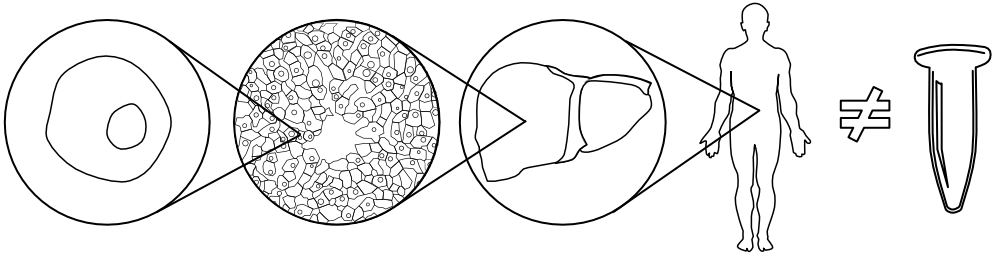
A key focus of the lab is in understanding the ways that the intra-host environment shapes evolutionary outcomes of these populations. Humans are not Eppendorf tubes - we’re heterogeneous and spatially structured across multiple levels of biological organization. These environments mediate biotic interactions within and between intra-host populations, shape population demography, and impose heterogeneous challenges for growth. With new opportunities to make spatially-explicit population measurements, we are now poised to develop new insights into how intra-host spatial structure drives disease outcomes.
Some of the interests of the lab include:
- How do distinct intra-host environments impact the way that populations evolve?
For example, heterogeneous drug concentrations can aid HIV in evolving resistance to antiretrovirals, and evolutionary responses in different spatial anatomical locations can be distinct. Different microenvironmental conditions can permit certain spatial regions of a tumor to evolve faster than others. Differences in lung conditions may drive bacterial resilience in the presence of CF treatments. Understanding how and when these environments contribute is crucial for reconstructing, predicting and steering evolution.
- How does spatial localization within cells and tissues drive viral evolution and disease progression?
Because viruses need to enter cells in order to replicate, who those viruses enter the cell with can have a major impact on the way that they evolve. For example, this mediates viral opportunities for gene exchange, an important driver of evolutionary diversification. Intriguingly, interactions between co-infecting viruses can sometimes result in the masking of certain phenotypes, which is a property that we might like to exploit to slow drug resistance evolution. Other times, interactions between intracellular viruses can result in new phenotypes entirely, including the ability to spread in novel environments. We are interested in understanding the diverse ways that intracellular viral interaction drives pathogenesis.
- How important is parallelism in intra-host evolutionary responses? A longstanding interest of the lab is that in very large populations, populations can have multiple adaptive responses that occur and spread simultaneously (via mutation or plasticity). Parallel adaptation and soft sweeps are a pattern that we see repeatedly across diverse intra-host systems. We are interested in how to detect adaptation in this regime, and understanding the impact that this has on the tempo and mode of evolution.
Here's a 15 minute video about some of the lab's interests that was up to date in January 2023:
News
- September 2024: Dr. Linh Tran joins the lab as a postdoctoral scholar - welcome, Linh! Iris is selected as a poster finalist at the departmental retreat - well done, Iris!
- July 2024: Allie Kreitman joins the lab for a rotation - welcome, Allie!
- June 2024: Maya Lewinsohn is designated the runner up for the 2024 Omenn Prize for her work on tumor phylogenetics. Yingnan Gao's paper on signatures of selection in tumor phylogenies is available on biorXiv. Yirui Chen joins the lab as an undergraduate researcher. Welcome, Yirui, and congrats, Maya and Yingnan!
- March 2024: Dylan Clark is awarded a Mary Gates scholarship, and is selected as a Sedlock Icon Scholar! Congratulations, Dylan!
- Janaury 2024: Elena's paper on HIV recombination is published in MBE! OUP wrote a nice press release about the paper that can be found here. Awesome job, Elena!
- December 2023: Will Hannon's genomic analysis of spatial measles dynamics in the brain (in collaboration with Iris Yousaf and the Cattaneo lab at Mayo Clinic) is published in PLOS Pathogens - see some of the nice press coverage here and in a Fred Hutch Spotlight Article.
- November 2023: Dylan Clark wins the Katharina Casey Leadership Award from UW biology - congratulations, Dylan!
- September 2023: Dr. Sam Hart jointly joins the Feder and Harris labs as a postdoctoral scholar. Welcome, Sam! Alex and Elena are both selected as platform presenters based on the strength of their posters at the departmental retreat - awesome job!
- August 2023: Alex Robertson wins a spot on the CMB training grant! Congratulations, Alex! Alison joins the Herbold Computational Biology Program at the Fred Hutch as an affiliate investigator. We are looking forward to new opportunities for interaction within the program.
- May 2023: Elena Romero's paper, Elevated HIV viral load is associated with higher recombination rate in vivo, is now available on BioRxiv.
- March 2023: Maya Lewinsohn's paper State-dependent evolutionary models reveal modes of solid tumour growth is out in Nature Ecology & Evolution! See also the accompanying News & Views article. Congratulations to Maya and the whole team! Iris Jia joins the lab for a rotation, and Alex Robertson jointly joins the Feder and Kerr labs! Welcome, Iris, and welcome back, Alex!
- February 2023: Elena Romero is awarded a Young Investigator Award to attend CROI where she presents her new findings on HIV recombination. Collaborator Maya Lewinsohn from the Bedford lab successfully defends her dissertation. Well done, Elena and Maya!
- January 2023: Nashwa Ahmed joins the lab for a rotation. Welcome, Nashwa!
- November 2022: A Pilot and Feasibility Award from the Cystic Fibrosis Foundation will support our work on spatial Pseudomonas aeruginosa evolution in CF lungs.
- October 2022: An NIH Director's New Innovator Award will support our work on cancer evolution. Hunter Colegrove presents his epithelial modeling work at AISES 2022 and wins the second place grad oral presentation! Awesome job, Hunter!
- September 2022: Dr. Yingnan Gao joins the lab as a postdoctoral scholar, and Alex Robertson joins for a rotation. Welcome, Yingnan and Alex!
- August 2022: Maya Lewinsohn's paper, State-dependent evolutionary models reveal modes of solid tumor growth, is now available on BioRxiv.
- July 2022: Funding from the Cystic Fibrosis Research Development Program will support our ongoing work on Pseudomonas aeruginosa evolution.
- June 2022: Elena Romero wins the best graduate student poster award at PEQG 2022 for her work on HIV recombination! Well done, Elena! Hunter Colegrove joins the lab as a graduate student, and Dylan Clark joins the lab as an undergraduate researchers. Welcome, Dylan, and welcome back, Hunter!
- January 2022: Laura Baquero Galvis joins the lab for a rotation. Welcome, Laura!
- December 2021: Funding from the Gilead Research Scholars Program in HIV will support our ongoing work on HIV drug resistance evolution.
- October 2021: Hunter Colegrove joins the lab for a rotation. Welcome, Hunter!
- September 2021: Our paper on multi-drug resistance evolution in HIV is out in eLife (see also the nice highlight in Nature Eco Evo). Lane Warmbrod from the Institute for Public Health Genetics joins the lab for a rotation. Welcome, Lane!
- July 2021: Maya Lewinsohn presents her research on phylodynamic applications in cancer at SMBE 2021. Nice work, Maya!
- June 2021: The lab opens in the Genome Sciences Department at the University of Washington. Elena Romero joins as the lab's first graduate student. Welcome, Elena!
Joining the lab
Postdoctoral fellows
The Feder Lab at the University of Washington is hiring postdoctoral fellows.Broadly, the goals of the lab are to understand how spatial structure shapes rapid evolutionary processes, and develop approaches to leverage spatial information to better understand when and how populations will evolve. Within that, we are focusing on two specific research directions:
- Leveraging phylogenetics to understand tumor evolution and progression through time and space.
- Pairing models of viral dynamics and clinical sequencing data to understand the evolution of viral multi-drug resistance evolution in spatially and temporally-heterogeneous environments.
- Develop your own ideas aligned with the direction of the lab.
- Collaborate with other scientists from the lab, the Department of Genome Sciences, the Seattle scientific community and more broadly.
- Mentor students at the graduate, undergraduate and high school level
- Grow your own research program and plan for the next stages of your career.
PhD students
The lab accepts graduate students through the Genome Sciences and Molecular and Cellular Biology graduate programs. Prospective graduate students are very welcome to get in touch with questions about the lab, although this is not required to gain admittance to the program. Applications are due Dec 1.Currently a grad student in GS or MCB interested in a rotation? Feel free to reach out to chat about project ideas!
Undergraduate students
Undergraduate students with an interest in computational biology, mathematical modeling of biological systems, and/or evolutionary genomics are encouraged to get in touch regarding potential projects. Please send an email explaining why you're interested in the lab's work along with a CV/resume touching on any relevant experience or coursework (esp. programming) to affeder (at) uw.edu.Contact
E-mail: affeder (at) uw.edu
We're located in Foege Hall S103 in the Department of Genome Sciences.
Publications
You can find a current and complete list of publications on Google scholar.
Detecting branching rate heterogeneity in multifurcating trees with applications in lineage tracing data (2024)
[paper on bioRxiv]
Yingnan Gao, Alison Feder
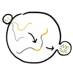 Elevated HIV viral load is associated with higher recombination rate in vivo (2024)
[paper in Molecular Biology & Evolution,
OUP press release]
Elena Romero, Alison Feder
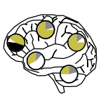 Brain tropism acquisition: the spatial dynamics and evolution of a measles virus collective infectious unit that drove lethal subacute sclerosing panencephalitis (2023) [paper in PLOS Pathogens, Press: Mayo news, Fred Hutch Spotlight Article]
Iris Yousaf*, Will Hannon*, Ryan Donohue, Christian Pfaller, Kalpana Yadav, Ryan Didkan, Sanjay Tyagi, Declan Schroeder, Wun-Ju Shieh, Paul Rota, Alison Feder, Roberto Cattaneo
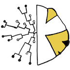 State-dependent evolutionary models reveal modes of solid tumor growth (2023)
[paper in Nature Ecology & Evolution, News & Views, This Week in Evolution (TWiEVO), This Week in Mathematical Oncology]
Maya Lewinsohn, Trevor Bedford, Nicola Müller*, Alison Feder*
Understanding patterns of HIV multi-drug resistance through models of temporal and spatial drug heterogeneity (2021)
[paper in eLife, highlight in Nature Ecol Evo]
Alison Feder, Kristin Harper, Chanson Brumme, Pleuni Pennings

The clarifying role of time series data in the population genetics of HIV (2021)
[paper in PLOS Genetics]
Alison Feder, Pleuni Pennings, Dmitri Petrov
 Evolutionary dynamics in structured populations under strong
population genetic forces (2019)
Evolutionary dynamics in structured populations under strong
population genetic forces (2019) [paper in G3]
Alison Feder, Pleuni Pennings, Joachim Hermisson*, Dmitri Petrov*
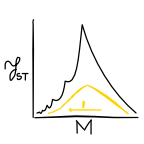 The relationship between haplotype-based FST and haplotype length (2019)
[paper in Genetics, video abstract]
Rohan Mehta, Alison Feder, Simina Boca, Noah Rosenberg
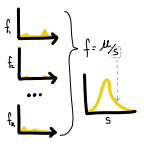 Within-patient HIV mutation frequencies reveal fitness costs of CpG dinucleotides, drastic amino acid changes and G->A mutations (2018)
[paper in PLOS Genetics]
Kristof Theys*, Alison Feder*, Maoz Gelbart*, Marion Hartl, Adi Stern, Pleuni Pennings
 High resolution spatio-temporal assessment of SHIV evolution reveals a highly dynamic
process within the host (2017)
High resolution spatio-temporal assessment of SHIV evolution reveals a highly dynamic
process within the host (2017) [paper in PLOS Pathogens, video abstract]
Alison Feder, Christopher Kline, Patricia Polacino, Mackenzie Cottrell, Angela Kashuba, Brandon Keele, Shiu-Lok Hu, Dmitri Petrov, Pleuni Pennings*, Zandrea Ambrose*
 More effective drugs lead to harder selective sweeps in the evolution
of drug
resistance in
HIV-1 (2016)
More effective drugs lead to harder selective sweeps in the evolution
of drug
resistance in
HIV-1 (2016)[paper in eLife, video abstract]
Alison Feder, Soo-Yon Rhee, Susan Holmes, Bob Shafer, Dmitri Petrov* and Pleuni Pennings*
 The population genetics of drug resistance evolution in natural populations of viral, bacterial and eukaryotic pathogens. (2016)
The population genetics of drug resistance evolution in natural populations of viral, bacterial and eukaryotic pathogens. (2016)[paper in Molecular Ecology]
Ben Wilson*, Nandita Garud*, Alison Feder*, Zoe Assaf*, and Pleuni Pennings
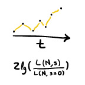
Identifying Signatures of Selection in Genetic Time Series (2014)
[paper in Genetics]
Alison Feder*, Sergey Kryazhimskiy*, Joshua Plotkin
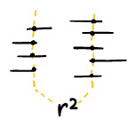 LDx: estimation of linkage disequilibrium from high-throughput pooled resequencing data.
[paper in PLOS One, download LDx]
Alison Feder, Dmitri Petrov, Alan Bergland
 Natural selection affects multiple aspects of genetic variation at putatively neutral sites across the human genome. [paper in PLOS Genetics]
Natural selection affects multiple aspects of genetic variation at putatively neutral sites across the human genome. [paper in PLOS Genetics]
Kirk Lohmueller, Anders Albrechtsen, Yingrui Li, Su Yeon Kim, Thorfinn Korneliussen, Nicolas Vinckenbosch, Geng Tian, Emilia Huerta-Sanchez, Alison Feder, Niels Grarup, Torben Jorgensen, Tao Jiang, Daniel R. Witte, ... , Rasmus Nielsen
Media
- Here's a 15 minute video about some of the lab's interests (Jan 2023):
- Video abstract for 'The Relationship Between Haplotype-Based FST and Haplotype Length':
- Video abstract for 'A spatio-temporal assessment of simian/human immunodeficiency virus (SHIV) evolution reveals a highly dynamic process within the host':
Team
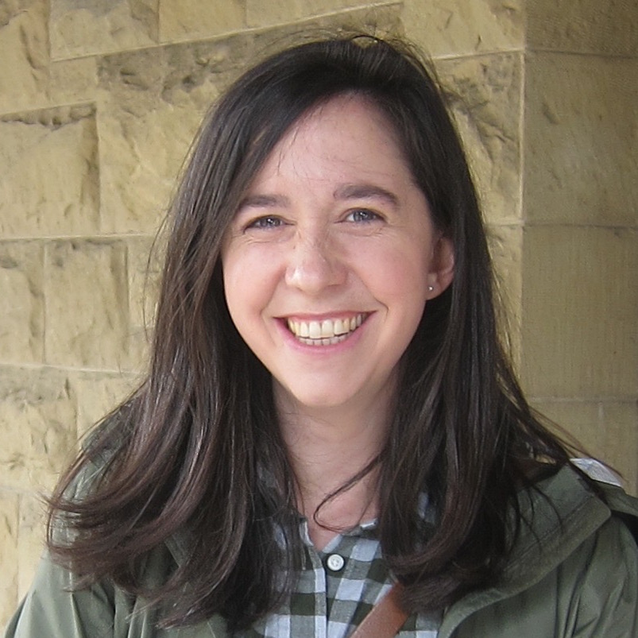
Alison Feder (she/her)
Principal investigator [CV]affeder (at) uw.edu
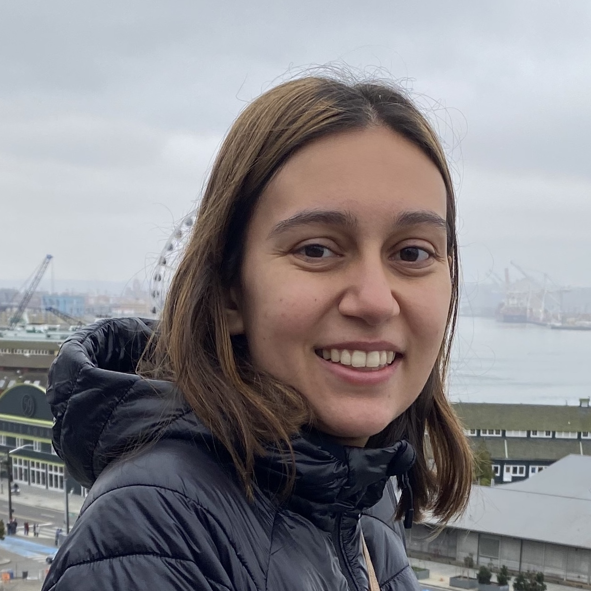
Elena Romero
Genome Sciences PhD studentElena received her BS in Mathematical and Computational Biology at Harvey Mudd College. Her work focuses on how HIV's intra-host demography impacts evolutionary forces like recombination and selection.
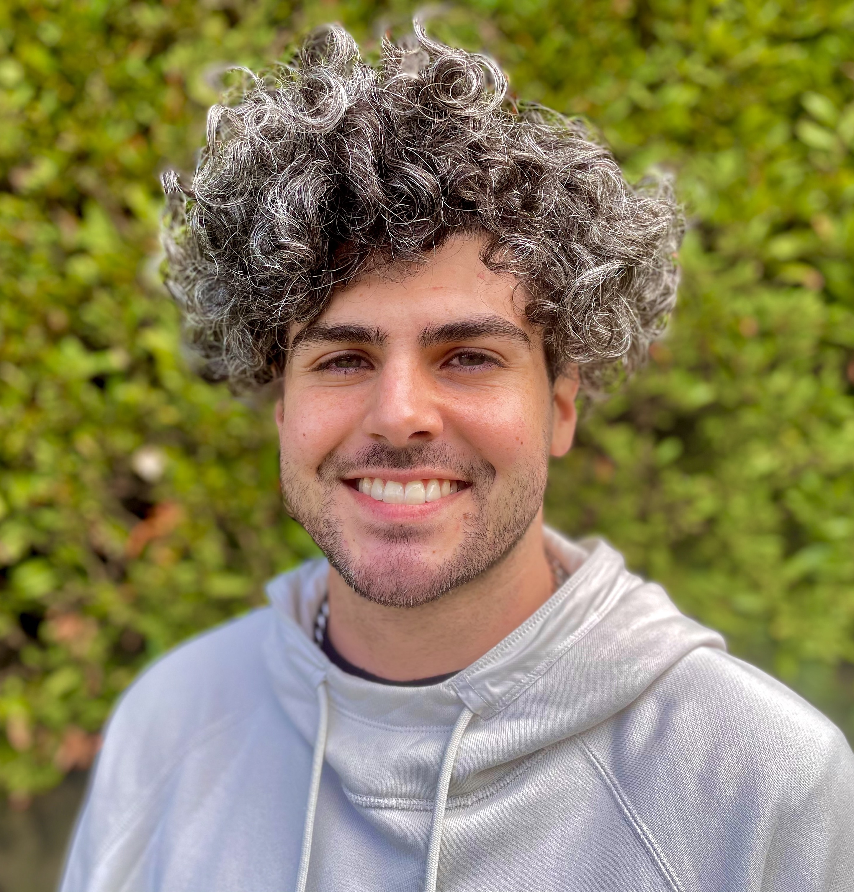
Hunter Colegrove
Genome Sciences PhD studentHunter received his BA in Biochemistry from the University of Washington. Hunter is developing models of cellular competition among epithelial cells.
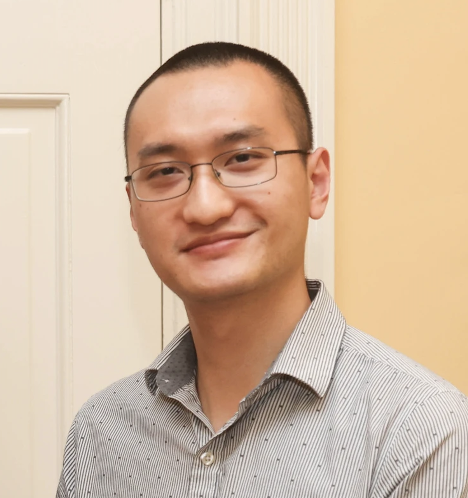
Yingnan Gao
Postdoctoral ScholarYingnan received his Ph.D. in Ecology and Evolutionary Biology at University of Virginia. He is currently working on identifying spatial and phylogenetic patterns in tumor through single-cell sequencing data.

Alex Robertson
MCB PhD Student (joint with Ben Kerr)Alex received his BS in Global Disease Biology from UC Davis and his MPH in Epidemiology of Microbial Diseases from the Yale School of Public Health. Alex is interested in how intra-cellular interactions (i.e., among viruses, plasmids) affect evolutionary change at the population level, particularly with respect to drug resistance.
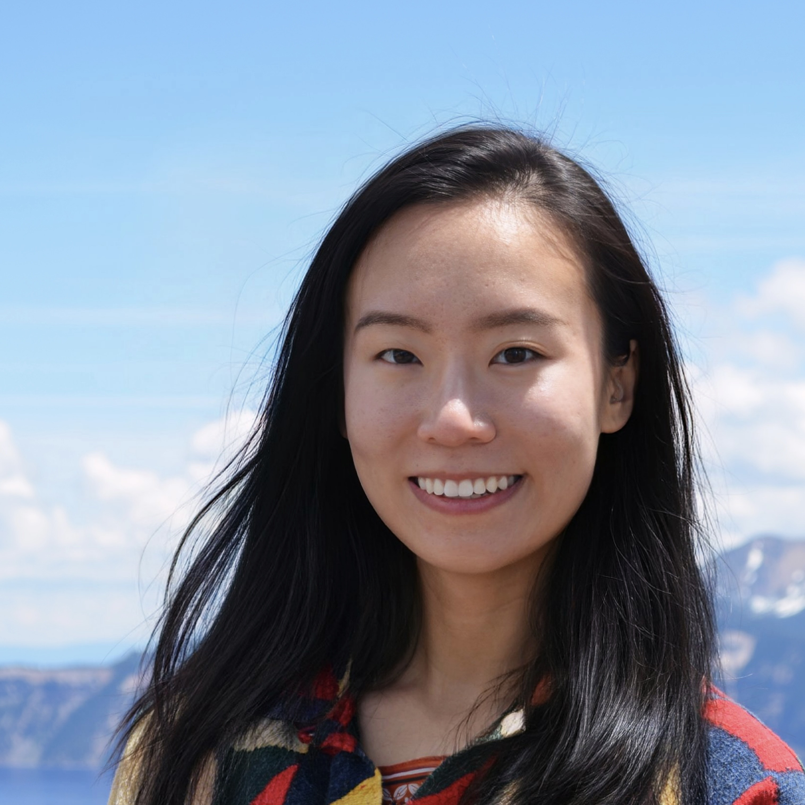
Tongqiu (Iris) Jia
Genome Sciences PhD StudentIris received her BS in Bioinformatics at UC San Diego and MPH in Epidemiology at University of Washington. She is current investigating the dynamics and selection of intra-host Pseudomonas populations.
Sam Hart
Postdoctoral Scholar (joint with Kelley Harris)Sam received his PhD in Molecular and Cellular Biology from the University of Washington and his BS in Zoology from the University of Vermont. Sam is interested in mutation rate/spectra evolution within and between tumors.
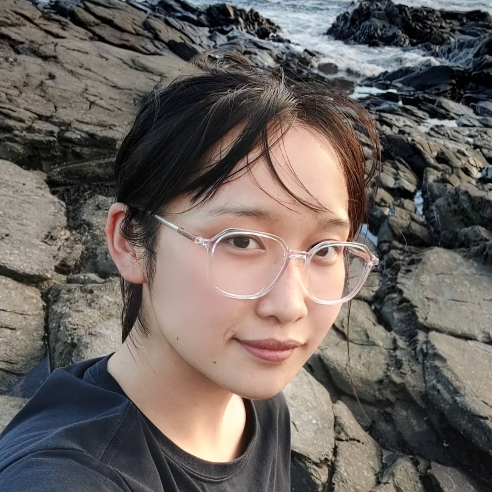
Yirui Chen
Undergraduate researcherYirui is an undergraduate at UW majoring in applied and computational math sciences and molecular biology. She is studying selection and recombination in intra-host Pseudomonas aeruginosa evolution.
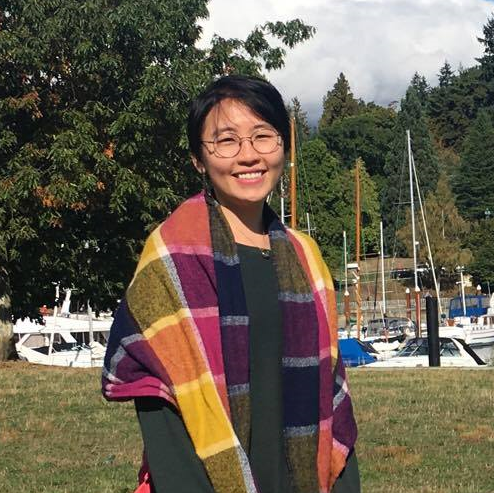
Linh Tran
Postdoctoral ScholarLinh received her PhD in Genetics from the University of Arizona and her BA in Chemistry from Bryn Mawr College. She is interested in building and validating methods for inferring evolutionary parameters from cancer genomic data.
You? Learn more about joining the lab.
Alumni
Allie Kreitman
MSTP Rotation StudentNashwa Ahmed
MCB PhD Rotation StudentMaya Lewinsohn
Collaborator/Lab friendDylan Clark
Undergraduate researcher (2022 - 2024)Laura Baquero Galvis
MCB PhD rotation student (Winter 2022)Lane Warmbrod
Public Health Genetics PhD rotation student (Fall 2021)Journal Clubs
We organize two journal clubs focused on the evolution and genomics of cancer and HIV.
- Our externally-facing cancer evolution journal club is currently on hiatus, but our reading list can be found here.
- Our HIV evolution and genomics journal club is organized jointly with Lillie Cohn (Fred Hutch) and Dan Reeves (Fred Hutch), and more details can be found here.